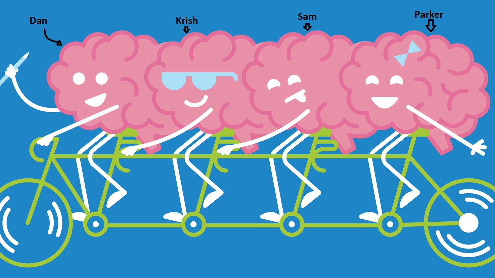

Project Goals
Our goal is to create a website for the book "Journal of a Pandemic Year". The site will display media from various sources in an intuitive way such that visitors can search for and interact with media reflecting topics discussed in the book, as well as other events that occurred during 2020. Additionally, Users will be able to find media based on date or theme, and submit their own experiences. The site will act as a digital museum that grows with time.
Approach
Our strategy will be to utilize Wordpress to create a website for the book. We will create plugins in php that interact with the Zotero and Group 11 databases to achieve the required dynamic functionality as well as allowing for the display of desired media.
The typical user experience is as follows:
Once on the website, the End User will have the ability to search for a specific date, or view the entire site at once. If a date is searched for, a page with all of the corresponding sources will be shown to the user. The user then can click on one of the sources to interact with it more ie. play media, open link to external source, etc.. The user can then choose to go to the next day, search for another day, or view the entire site. When viewing the entire site, all of the dates with available sources are listed in order, grouped by month, and allow the user to select one from the list to view.
Group Nine

- Dan Fletemier
- Krish Khatri
- Parker Jackson
- Sam Garretson